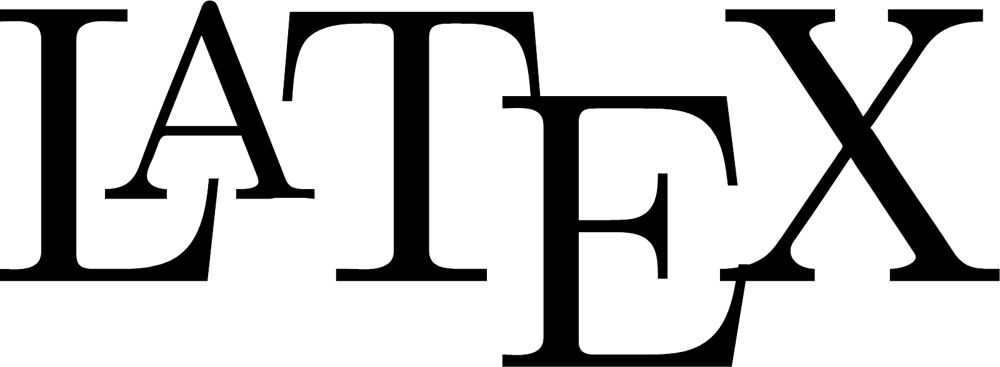

Welcome to Dante's Page
I'm a Data Engineer at Target and a 2020 graduate of Indiana University. I studied computer science with a focus on artificial intelligence and data science. I earned minors in linguistics and computational linguistics as well. I have been programming for 14+ years with experience in Python, R, React, and more.
In 2020 I was an undergraduate researcher under Dr. Sandra Kübler of the Indiana University Department of Linguistics. Our paper on the role of biased data in abusive language detection was accepted into the Fourth Workshop on Online Abusive and Harms and presented at the 2020 Conference on Empirical Methods in Natural Language Processing.
I'm currently working on overhauling this site using ReactJS, JavaScript (JSX), and SCSS. Stay tuned!
Work Experience
Check out my LinkedIn page for my full work history!Publications
Investigating Sampling Bias in Abusive Language Detection
Lead author of a paper investigating the role of bias in abusive language detection. Submitted to the 4th Workshop on Online Abuse and Harms, colocated
with the 2020 Conference on Empirical Methods in Natural Language
Processing.
View the paper here.
Projects
Speech Synthesis for the Chuvash Language with Deep Neural Networks
I trained a few popular speech synthesizers to produce intelligible Chuvash audio clips from written samples of the language. I used Python as the primary programming language and R for processing non-audio data. Special permission was granted to train neural networks for each speech synthesis solution on IU's Big Red II supercomputer.
Read the paper here, and the Request for Proposal (RFP) here. Code is available in my class repository on GitHub. Final project for LING-L 445 "Computation and Linguistic Analysis," a graduate level course.

TechPointX Xbot Digital Assistant Data Analysis
I used R to observe trends in a provided dataset and wrote a report to discuss my findings. This was
part of the data science technical screening for the Xtern Summer 2019 internship program. I passed the
screening and earned a spot in the Xtern Class of 2019 as a Software Engineer.
View the report here.
Web Development Projects for Xtern Bootcamp 2018
I worked on 4 projects for Xtern Bootcamp 2018 that utilized a mix of HTML, JavaScript, the ReactJS library, and CSS.
- Chrismess
- Served as an introduction to the DOM and DOM Manipulation.
- Source Code
- Dwarf Underground
- Exercise in translating vanilla HTML and JavaScript to React components and JSX.
- Source Code
- API Party (Code, WIP)
- Exercise in API usage; abandoned in favor of Chatarang due to limited time.
- Chatarang
- Chat app that utilizes Firebase for GitHub/Google authentication and message storage in a database.
- Source Code
Jungle: Java-Based Marketplace
An Amazon-esque marketplace written in Java by a team of three. Jungle lets you register as a buyer
or seller, list items for sale, buy items, receive shipping notifications, manage your account, and more.
It uses CSV files to keep an offline database of accounts and inventory.
Final project for CSCI-C
212 "Software Systems".

Porto Seguro Safe Driver Prediction
Used data provided by Brazilian auto insurance company Porto Seguro to predict the probability of a driver
initiating an insurance claim in the next year. Used R for data preprocessing and
Python to build the model.
Final project for CSCI-B 365 "Data Mining and
Analysis". View the report here.
Cryptocurrency Analysis AI
Developed an AI in a team of two that predicts when to buy and sell popular cryptocurrencies. I used
R for data preprocessing, Python for creating a framework, and the
TensorFlow library for training a recurrent neural network (RNN) model.
Final
project for CSCI-B 351 "Intro to Artificial Intelligence". View the report
here.
Skills
Programming
- Scala
- Python
- Java
- R
- Go
- ReactJS
- JavaScript / JSX
- TypeScript / TSX
- C
- Racket
Libraries
Databases
- Apache Spark
- Apache Hive
- PostgreSQL
- Apache Hadoop
Typesetting, Markup & Style
- 
- R Markdown
- HTML
- CSS / SCSS
Development Environments & Software
- JetBrains IDEs
- IntelliJ IDEA Ultimate
- PyCharm Professional
- GoLand
- DataGrip
- WebStorm
- CLion
- Git
- RStudio
- Google Colab
- Microsoft Office
- Word
- Excel
- PowerPoint
- Visual Studio 2019
- Visual Studio Code
- Adobe Creative Cloud
- Photoshop CC
- Illustrator CC
- Dreamweaver CC
- CLIP STUDIO PAINT
Operating Systems
- Linux
- Ubuntu
- Ubuntu Server
- Linux Mint
- Microsoft Windows
- MacOS
- Android
Languages (ILR Scale)
- English — Native (ILR 5)
- Spanish — ILR 2
- Esperanto — ILR 1
Awards and Honors
Below are some distinctions I've earned in my career so far.
Dean's List
Significant academic distinction given to those who attain a highgrade point average.
Hudson and Holland Scholar
Distinction given to underrepresented minority students at IU who are, in the program's words, "leaders and model citizens of the campus community."
Hispanic Scholarship Fund Scholar
Distinction and award given to students who are, in the organization's words, "among the best and brightest Latino students in the country."
Contact Me
Email: dante (at) razonet.org
PGP: Public
Key